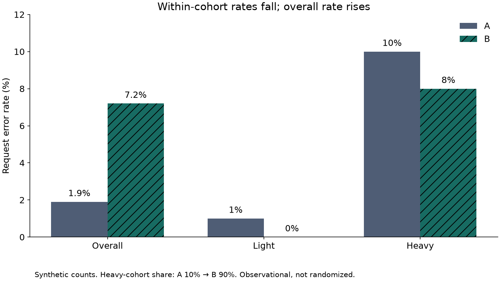

C1 · 사실
전체 A 19/1000=1.9%, B 72/1000=7.2%다.
cohort별 비율의 평균이 아닌 전체 오류 수/요청 수. 같은 총 요청 수에서 오류 53건 증가.
출처: S1, S3
전체 관측 오류율은 1.9%에서 7.2%로 높아졌지만 두 집단 각각에서는 낮아졌습니다. heavy 요청 비중이 10%에서 90%로 달라진 자료이므로 단일 개선 순위나 인과 효과를 결론내릴 수 없습니다.
설명용 합성 데이터입니다. row는 variant·cohort별 같은 설명용 기간의 요청 수와 오류 수이고 관측 단위는 요청입니다. 사용자 중복·독립성은 제공되지 않았으며 무작위 배정 자료가 아닙니다.
rate = errors / requests. 결측·0 denominator·중복 row는 이 입력에 없고 0 errors는 관측값으로 유지합니다. 전체율은 오류 수 합계 / 요청 수 합계로 계산합니다.
| 범위 | A 오류/요청 | A 오류율 | B 오류/요청 | B 오류율 | B−A | A 대비 상대 |
|---|---|---|---|---|---|---|
| 전체 | 19/1000 | 1.9% | 72/1000 | 7.2% | +5.3 pp | +278.95% |
| light | 9/900 | 1.0% | 0/100 | 0.0% | −1.0 pp | −100% |
| heavy | 10/100 | 10.0% | 72/900 | 8.0% | −2.0 pp | −20% |
pp는 percentage point입니다. 7.2−1.9=5.3 pp와 (7.2−1.9)/1.9×100≈278.95%를 구분합니다. 전체 오류율은 약 3.789배이며, 단순히 “5.3% 증가”라고 쓰면 기준을 혼동합니다.

| 요청 비중 | A | B |
|---|---|---|
| light | 90% | 10% |
| heavy | 10% | 90% |
A = 0.9 × 1% + 0.1 × 10% = 1.9%
B = 0.1 × 0% + 0.9 × 8% = 7.2%B는 오류율이 높은 heavy 요청 비중이 90%입니다. 따라서 전체 7.2%를 근거로 각 workload에서 B가 나쁘다고 해석하면 틀리고, 집단별 감소만으로 실제 전체 운영 오류가 줄었다고 해석해도 틀립니다.
확인된 것은 이 표본의 관측 비율과 구성입니다. B가 오류를 줄인 원인인지, 차이가 우연 변동 범위를 벗어나는지는 확인하지 않았습니다. B light 0/100은 이 표본의 오류 0건이며 미래 오류율 0 보장이 아닙니다. 작은 집단 표본과 독립성 미확인을 함께 보고합니다.
| 시점 | 권장 대처 |
|---|---|
| 단기 | 전체·cohort별 비율과 요청 비중 동시 보고, 비교 목표 mix 명시 |
| 중기 | 무작위 배정/비교 조건 통제·사용자/시간/난이도 정보 확보 후 불확실성 분석 |
| 장기 | 목표 workload 표준화와 절대 오류 수·비율을 함께 관측 |
python3 examples/data/analyze.py
python3 examples/data/analyze.py --plot # Matplotlib 필요
python3 -m unittest discover -s tests -v원본 SHA-256과 계산 결과는 output/results.json, SVG/PNG는 output/rates.*입니다. 독립 평가에서는 Decimal로 같은 값을 재계산했습니다. 수치·단위·zero baseline을 대조하고 실제 PNG를 열어 제목·범례·값·하단 주석의 잘림 여부를 확인했습니다. 통계적 유의성 검정·uncertainty interval·production 실험은 수행하지 않았습니다.
전체 A 19/1000=1.9%, B 72/1000=7.2%다.
cohort별 비율의 평균이 아닌 전체 오류 수/요청 수. 같은 총 요청 수에서 오류 53건 증가.
출처: S1, S3
전체 변화는 +5.3 percentage points, 상대 약 +278.95%, B/A 약 3.789배다.
절대 비율 차이와 A 대비 상대 변화는 단위와 기준이 다르다.
출처: S1, S3
light는 1%→0%, heavy는 10%→8%이며 heavy 비중은 10%→90%다.
집단 내 관측 비율은 낮지만 구성 비중이 달라 전체 방향이 뒤집힌다.
출처: S1, S3
B의 인과 효과와 통계적 유의성은 이 계산만으로 확인되지 않았다.
무작위 배정·요청 독립성·집단 내 난이도 조건이 없다. 0/100도 미래 오류율 0 보장이 아니다.
출처: S2
전체·집단별 rate와 구성 비중을 함께 보고하고 목표 workload mix를 고정해 비교한다.
운영의 실제 전체 결과와 같은 구성에서의 비교를 구분하기 위한 제안이다.
출처: S1, S2